Eine Woche zuvor stand ich noch am Walchensee und sah dem Wasser beim Stillhalten zu. Jetzt stehe ich in Passau, und das Wasser hat es plötzlich eilig: drei Flüsse auf einmal, jeder mit eigenem Tempo und eigener Farbe, und alle wollen exakt an derselben Stelle ankommen. Vom stillen Bayerischen Lakeland direkt an die Ortsspitze. Bassd scho, sagt der Franke in mir.
Dreiflüssestadt: Wo Inn und Ilz in die Donau münden
Die Donau kommt träge und blau-braun aus dem Westen. Der Inn schießt smaragdgrün und ungestüm aus den Alpen heran. Die Ilz, klein und fast schwarz, bringt Moorwasser aus dem Nationalpark Bayerischer Wald mit. Man sieht die Grenze zwischen den Wassern noch ein ganzes Stück flussabwärts, wie drei Kollegen, die nebeneinander laufen, aber keiner will als Erster reden.
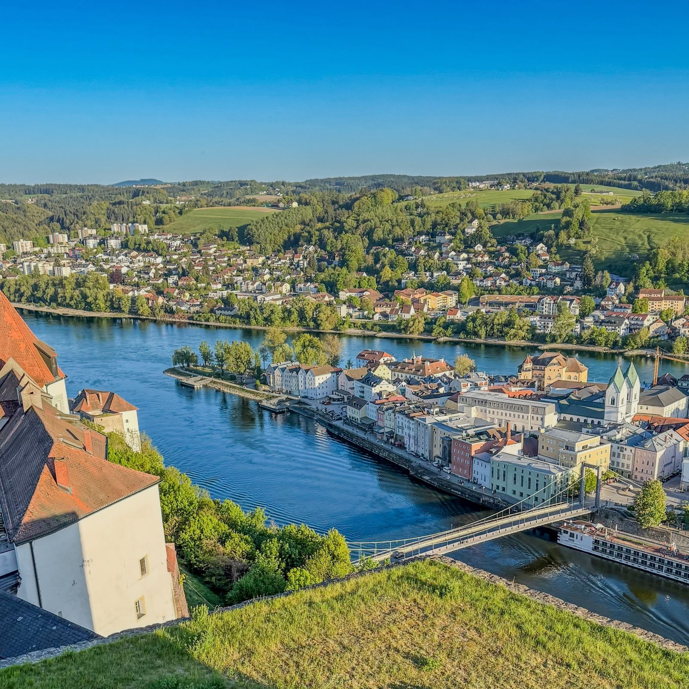
Die Altstadt liegt auf der Landzunge dazwischen wie ein Schiffsbug, spitz zulaufend und von Wasser umgeben.
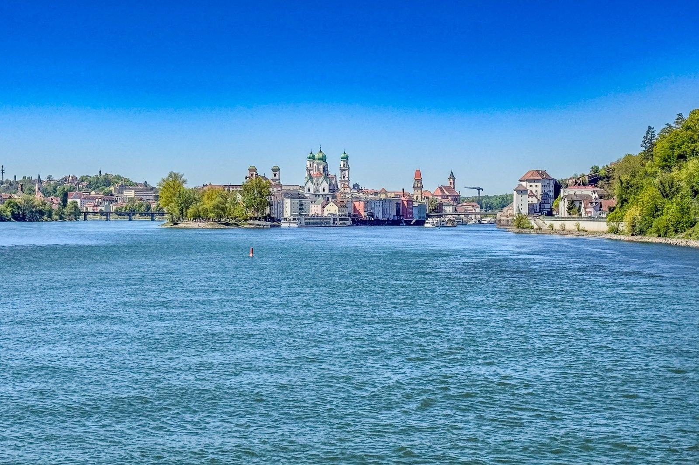
An der Hauswand der Alten Residenz hängen zwei Tafeln übereinander. Unten steht: „Am Hofe des Bischofs Wolfger von Erla 1191 bis 1204 entstand um 1200 das Nibelungenlied.“ Darunter: „1203 wird der Minnesänger Walther von der Vogelweide in den Bischofsurkunden erwähnt.“ Die Tafel klingt sicher, die Forschung sagt „wahrscheinlich“. Oben steht, dass Kaiser Leopold I. hier 1683 Prinz Eugen von Savoyen in seine Dienste nahm.
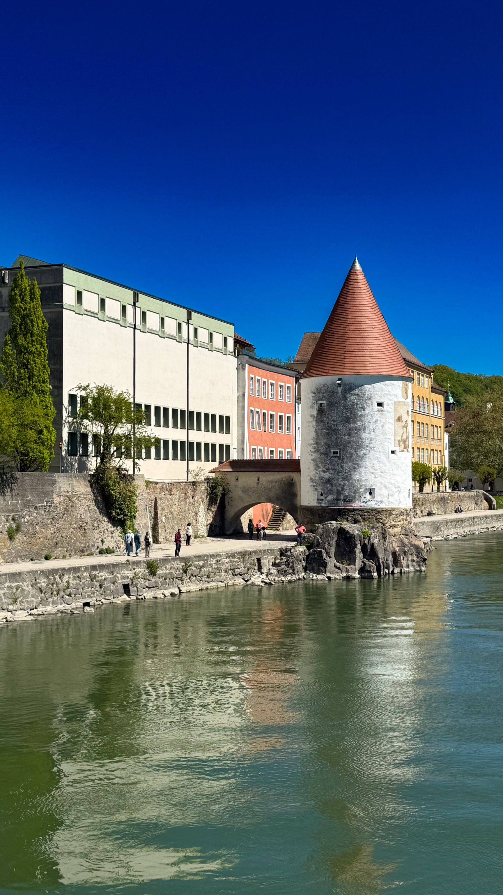
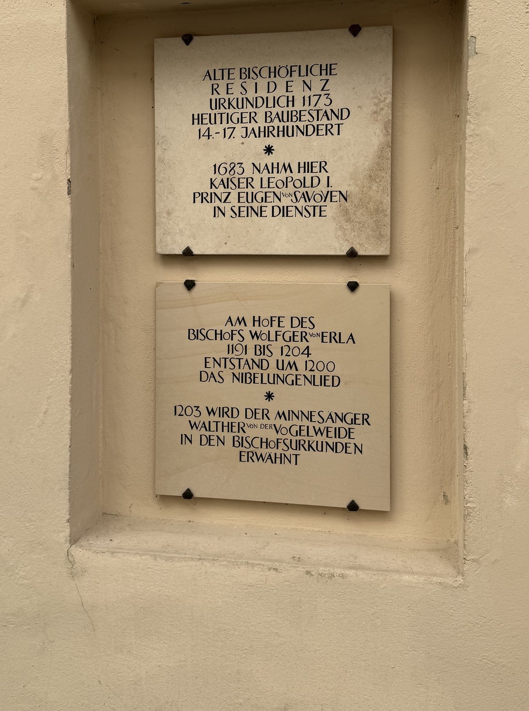
Tipp: Zur Ortsspitze geht man zu Fuß durch die Altstadt, sie ist auch mit Rollstuhl barrierefrei erreichbar. Bei mir, vom 1. bis 3. Mai, waren die Farbgrenzen früh morgens und am späten Nachmittag am klarsten. Ein paar Minuten stehen bleiben und schauen.
Dom St. Stephan: 17.974 Pfeifen und kein Register zu leise
Der Weg zum Dom führt durch die Zengergasse, eine dieser Passauer Schluchten zwischen Hausfassaden, in denen der Himmel nur noch als schmaler blauer Streifen vorkommt. Bis man um die Ecke biegt und der Dom einfach da ist. Weiß, gotisch-barock verschmolzen, viel zu groß für die enge Gasse davor.
Innen Deckenfresken, dazu Stuck von Giovanni Battista Carlone in riesigen Mengen. Mittendrin die Bänke voller Touristen. Die Orgel sieht man kaum, sie verteilt sich über den ganzen Kirchenraum: 17.974 Pfeifen in fünf Orgelwerken. Hauptorgel, zwei Orgeln auf den Westemporen, eine Chororgel und irgendwo im Dachstuhl eine „Fernorgel“, die klingt, als würde sich der Kirchenraum selbst räuspern. 1928 als damals größte Orgel der Welt gebaut, heute laut Bistum eine der größten Kirchenorgeln der Welt. Bis 2028 wird sie saniert, so lange spielen nicht alle Teilwerke.
Das hat mich nicht davon abgehalten, mittags pünktlich dazustehen und zu warten, ob sie loslegt. Sie tat es. Und ich hatte vorher noch über die größte Orgelpfeife gescherzt, über elf Meter, 306 Kilo.
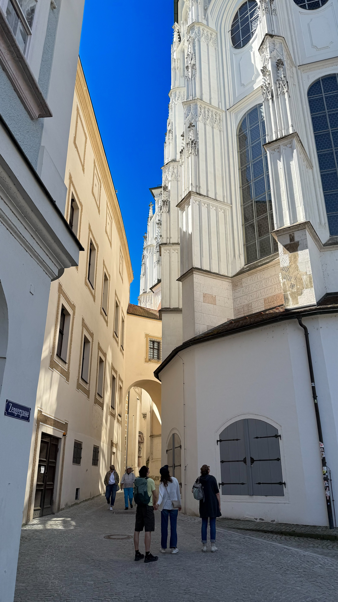

Tipp: Mittagskonzerte gibt es vom 2. Mai bis 31. Oktober, Montag bis Samstag um 12 Uhr, etwa eine halbe Stunde lang. Eintritt 6 Euro, ermäßigt 3 Euro. Einlass ab 11:20 Uhr über den Dominnenhof (Stand November 2026, Bistum Passau).
Veste Oberhaus: Wo die Fürstbischöfe ihre Stadt im Blick behielten
Von unten sieht man die Veste Oberhaus als graue Mauerkrone über der Stadt, mit rosa Fassaden davor, wie in Puderzucker getunkt. Von oben versteht man, warum die Fürstbischöfe hier oben und nicht unten bei ihren Bürgern wohnten: freie Sicht auf alle drei Flüsse, freie Sicht auf jeden, der Ärger machen wollte. 1298 und 1367 versuchten es die Bürger tatsächlich. Gegründet 1219, mit 65.000 Quadratmetern umbauter Fläche eine der größten Burganlagen Europas, gebaut auch als Absicherung gegen das eigene, aufmüpfige Passauer Volk.
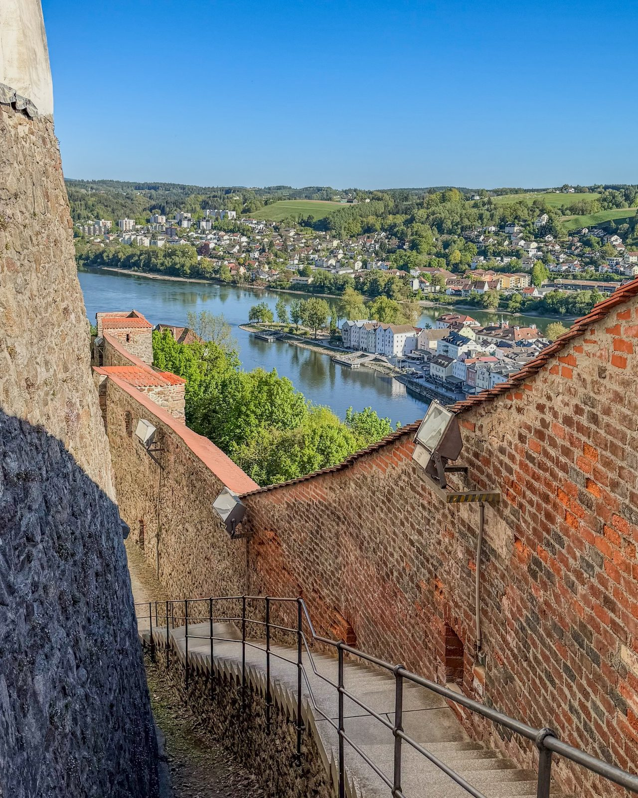
Ich bin zum Sonnenuntergang hochgefahren, zusammen mit der Familie und einer Handvoll anderer. Alle wollten dasselbe sehen, die Stadt von oben, während das Licht golden wird und die Kuppeln des Doms anfangen zu glühen. Selfie natürlich Pflicht, so wie das Fernrohr am Aussichtspunkt.
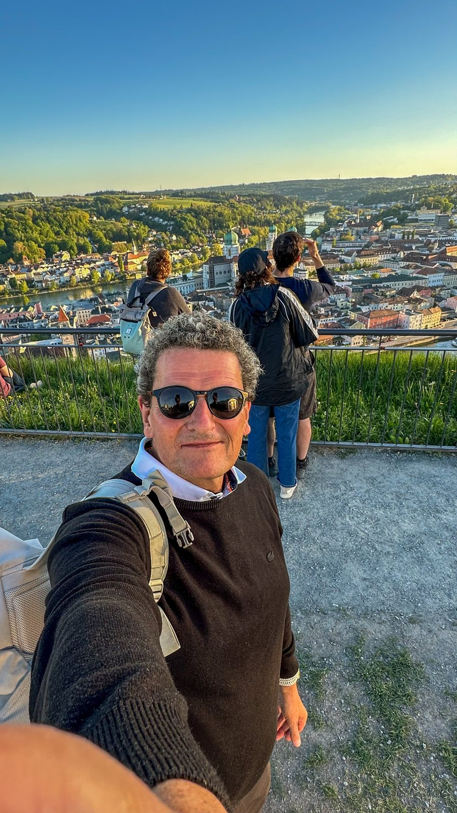
Tipp: Hoch fährt ein Pendelbus vom Rathausplatz, halbstündlich, aber nur zu den Öffnungszeiten des Museums. Zum Sonnenuntergang geht man zu Fuß, steil bergauf, oder fährt mit dem Auto zum Parkplatz an der Veste.
Gassen, Farben, Rathausturm
Gerade Linien gibt es in der Passauer Altstadt kaum. Gassen, die sich winden, verjüngen, plötzlich unter einem Torbogen verschwinden und dann eine Häuserzeile in Rosa, Gelb oder Orange freigeben.
Die Carlonegasse ist so eng, dass zwei Menschen mit Einkaufstasche sich schon einigen müssen, wer zuerst geht. Dafür trägt sie den Namen der Künstlerfamilie Carlone, aus der auch der Stuck im Dom stammt. Für eine Gasse dieser Größe eine ziemlich große Ehre.
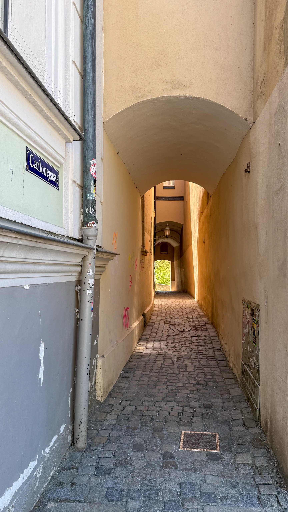
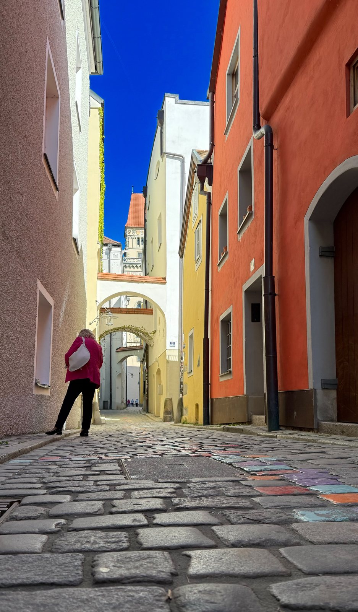
Am Ende fast jeder Gasse taucht irgendwann derselbe Turm auf: der Rathausturm, 38 Meter, neugotisch, 1889 bis 1892 gebaut, mit Uhr und Wappen. In der Höllgasse sind die Pflastersteine bunt bemalt. Eine kleine Kunstspur. Man folgt ihr, ohne zu wissen, wohin sie führt. Genau mein Reisestil.
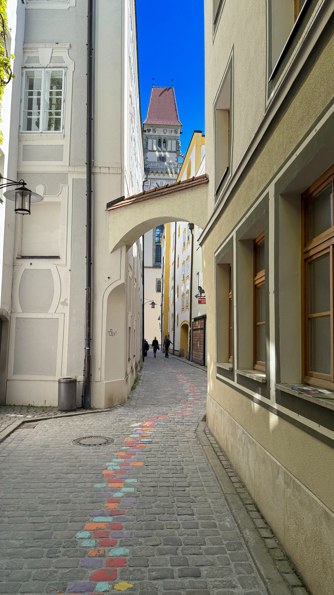
Tipp: Die Höllgasse heißt auch Künstlergasse. Die Künstler dort bemalen die Pflastersteine jedes Jahr neu.
Hochwasser: Die Stadt trägt ihre Narben wie Jahresringe
An einer Häuserecke in der Altstadt hängen Tafeln übereinander. Ganz oben, über dem Erkerfenster, der 3. Juni 2013 mit 12,89 Metern. Etwas tiefer der Juli 1954. Unter dem Fenster, in Stein gehauen, der März 1845.
Am Abend des 3. Juni 2013 stand die Donau bei 12,89 Metern. So hoch war sie seit 1501 nicht mehr, für damals rekonstruiert man etwa 13,20 Meter. In der Altstadt stand das Wasser teilweise bis zum ersten Stock, zum Teil wurde der Strom abgestellt.
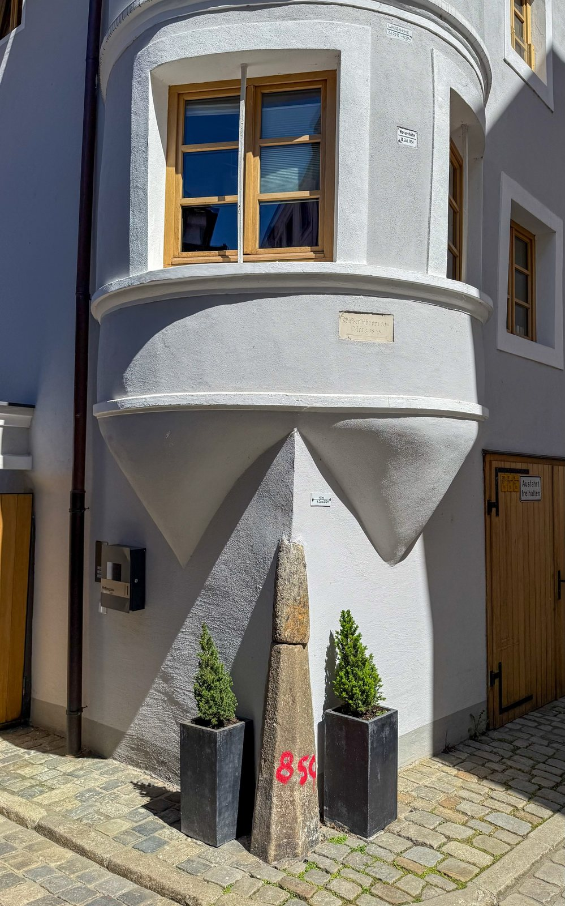
Tipp: Hochwassermarken hängen an mehreren Hauswänden der Altstadt.
Gablergasse: Graffiti mit Haltung
In der Gablergasse, ein paar Schritte vom Dom Richtung Ortsspitze, wird aus der ehrwürdigen Bischofsstadt kurz ein anderes Passau. Street-Art-Wände. Sprüche, die zwischen Blödsinn und Tiefsinn pendeln, manchmal im selben Satz.
An einer Wand fand ich, dicht neben klassischem Wildstyle-Schriftzug, eine kleine philosophische Wechselrede: „Was für eine Welt“, daneben, in Antwort, offenbar von einer zweiten Hand: „Lohnt sich das?“ Darunter: „Ja!“
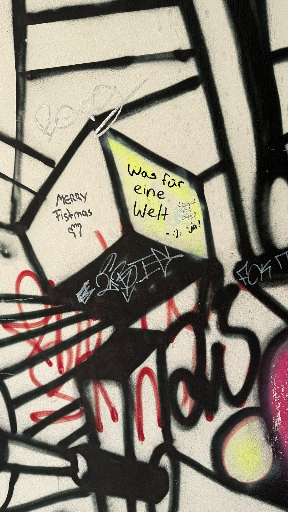
Tipp: Die Gablergasse liegt in der Altstadt, zwischen Dom und Ortsspitze.
Rindermarkt: Wo Passau sich selbst zuschaut
Auf der anderen Seite des Doms, am Rindermarkt, sitzt Passau bei Kaffee und schaut sich selbst beim Vorbeigehen zu. Stuckfassaden in Grau und Weiß, darunter Caféterrassen mit Sonnenschirmen, Postkartenständer, ein Herr mit imposantem weißem Bart und Gehstock, der aussieht, als könnte er selbst eine Nibelungensage erzählen. Dazwischen Rollstuhlfahrer, Touristen, Einheimische auf dem Weg zu irgendeinem Fest.
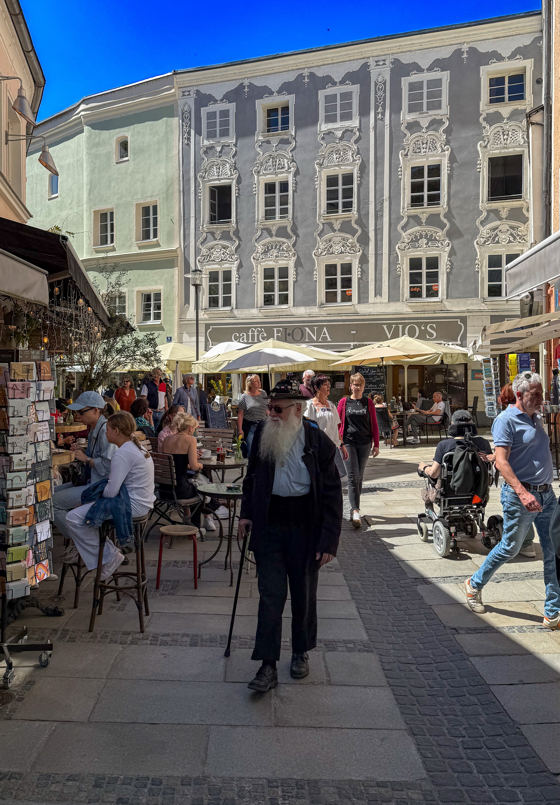
Häufige Fragen zum Dreiflüsseeck
An welchem Fluss liegt Passau?
An der Donau. Am Dreiflüsseeck an der Ortsspitze münden Inn und Ilz in sie, deshalb heißt Passau Dreiflüssestadt.
Warum heißt der Fluss nach Passau Donau und nicht Inn?
Die Donau hat bis Passau 647 Kilometer hinter sich, der Inn 510. Von Oktober bis April führt die Donau meist auch mehr Wasser. Übers Jahr gerechnet führt der Inn etwa fünf Prozent mehr Wasser, wegen seiner Hochwasser zur Schneeschmelze.
Warum bleiben die Farben nach dem Zusammenfluss getrennt?
Der Inn ist deutlich flacher, 1,90 Meter gegen 6,80 Meter bei der Donau. Er schiebt sich über das Donauwasser und drängt es beiseite. Ein längeres Stück flussabwärts sieht man deshalb alle drei Farben nebeneinander.
Wann sieht man die Farbgrenzen am besten?
Mein Eindruck vom 1. bis 3. Mai 2026: früh morgens und am späten Nachmittag. Eine offizielle Angabe dazu habe ich nicht gefunden.
Praktische Hinweise am Stück
- Ortsspitze (Dreiflüsseeck): bei mir Anfang Mai früh morgens und am späten Nachmittag die klarsten Farbgrenzen, barrierefrei erreichbar.
- Domorgel: Mittagskonzerte 2. Mai bis 31. Oktober, Montag bis Samstag um 12 Uhr, 6 Euro, ermäßigt 3 Euro.
- Veste Oberhaus: Pendelbus vom Rathausplatz zu den Museumszeiten, sonst zu Fuß (steil) oder mit dem Auto.
- Gablergasse: Street Art zwischen Dom und Ortsspitze.
- Höllgasse: bunt bemalte Pflastersteine, jedes Jahr neu.
- Hochwassermarken: an mehreren Hauswänden in der Altstadt.
Quellen & Recherche
Diese Story basiert nicht nur auf eigenen Erinnerungen. Ein paar Fakten habe ich recherchiert und mit folgenden Quellen abgeglichen. Wer will, kann selbst nachlesen.
- Dreiflüsseeck, Passau Tourismus
- Nibelungenlied, Wikipedia
- Wolfger von Erla, Wikipedia
- Walther von der Vogelweide, Wikipedia
- Die Orgel im Dom St. Stephan, Bistum Passau
- Orgeln des Domes St. Stephan, Wikipedia
- Veste Oberhaus, Tourismus Passau
- Bericht Junihochwasser 2013, Bayerisches Landesamt für Umwelt
- Hochwasser in Mitteleuropa 2013, Wikipedia
- Alte Residenz Passau, Wikipedia
- Wann ist die Domorgel zu hören?, Bistum Passau
- Veste Oberhaus, Wikipedia
- St. Stephen’s Cathedral, Passau Tourismus
- Carlonegasse, RegioWiki Niederbayern
- Rathaus Passau, Wikipedia
- Künstlergasse Höllgasse, Passau Tourismus
- Hochwasserrekord in Passau, taz (3. Juni 2013)
- Schaiblingsturm, Wikipedia
- Ilz, Wikipedia
- Standort Titelbild: Domplatz, OpenStreetMap
- Gablergasse, OpenStreetMap